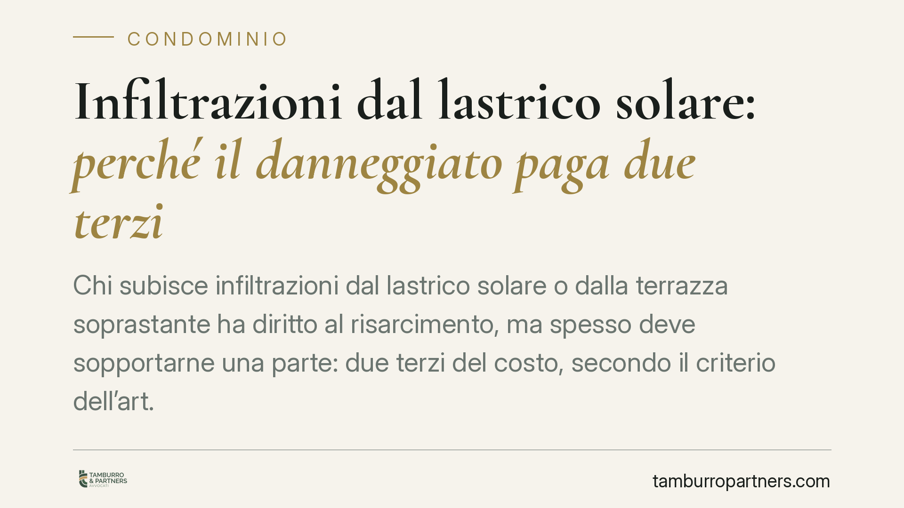

Infiltrazioni dal lastrico solare: perché il danneggiato paga due terzi
Chi subisce infiltrazioni dal lastrico solare o dalla terrazza soprastante ha diritto al risarcimento, ma spesso deve sopportarne una parte: due terzi del costo, secondo il criterio dell'art. 1126 c.c. Un esito che sorprende molti condomini e che si spiega con la funzione di copertura svolta dal lastrico. Vediamo quando la regola opera e quando, invece, si risponde per intero.

Il caso e il criterio dei due terzi
Un condomino lamenta danni all'appartamento causati da infiltrazioni provenienti dal lastrico solare (o dalla terrazza a livello) in uso esclusivo di un altro condomino. Pretende il risarcimento integrale. La Corte di Cassazione, in linea con il proprio orientamento consolidato, ribadisce che il danneggiato ha diritto a essere risarcito, ma deve contribuire per una quota.
La chiave è l'art. 1126 del codice civile. La norma stabilisce che, quando il lastrico solare è in uso esclusivo di uno dei condomini, le spese di riparazione o ricostruzione si ripartiscono così: un terzo a carico di chi ha l'uso esclusivo, due terzi a carico di tutti i condomini dell'edificio cui il lastrico serve da copertura, in proporzione al valore delle rispettive unità.
Il lastrico, infatti, non protegge solo chi lo calpesta: funge da tetto per i piani sottostanti. Di qui la ripartizione: il vantaggio dell'uso esclusivo giustifica una quota maggiore (un terzo del totale) a carico del titolare, ma la funzione di copertura comune impone agli altri di concorrere per i due terzi. Poiché il condomino danneggiato appartiene alla collettività che fruisce della copertura, finisce per sopportare la propria aliquota di quei due terzi. Da qui la percezione — corretta nella sostanza — che il danneggiato "paghi".
Il fondamento: le Sezioni Unite del 2016
L'applicazione del criterio dell'art. 1126 c.c. anche al risarcimento del danno da infiltrazioni discende dalle Sezioni Unite della Cassazione (sent. n. 9449/2016). È questa la pronuncia che ha ricondotto il danno da difettosa manutenzione del lastrico in uso esclusivo entro lo schema proporzionale dell'art. 1126 c.c., superando precedenti incertezze. Le ordinanze successive, come quella in commento, ne costituiscono applicazione.
Un'avvertenza di metodo: gli estremi delle singole ordinanze (numero e anno) vanno sempre verificati sulla fonte ufficiale prima di qualunque uso in giudizio.
La deroga: la responsabilità esclusiva
Il riparto dei due terzi non è una regola assoluta. Occorre distinguere due situazioni.
- Danno da usura e difettosa manutenzione ordinaria della copertura: è il terreno naturale dell'art. 1126 c.c. e, più in generale, della responsabilità da custodia ex art. 2051 c.c. riferita al bene nella sua funzione di copertura comune. Qui opera la proporzione un terzo / due terzi.
- Danno imputabile a una condotta o a un'opera del titolare dell'uso esclusivo: se le infiltrazioni derivano, ad esempio, da lavori eseguiti male sulla pavimentazione, da modifiche non autorizzate o da omessa manutenzione imputabile solo a chi ha l'uso esclusivo, la responsabilità da custodia ex art. 2051 c.c. — o quella aquiliana ex art. 2043 c.c. — ricade per intero su quel soggetto. In tal caso il danneggiato può ottenere il risarcimento integrale, senza decurtazioni.
Il nodo interpretativo sta proprio nel coordinamento tra l'art. 1126 c.c. e l'art. 2051 c.c.: il primo governa il riparto quando il danno è espressione del normale deterioramento del bene con funzione di copertura; il secondo prevale, a carico del singolo custode, quando il danno è riconducibile a un fatto a lui specificamente imputabile. Chi agisce per il risarcimento integrale deve quindi allegare e provare questa responsabilità specifica.
Implicazioni pratiche
Per il condomino danneggiato: non è detto che recuperi l'intero importo. Se il danno dipende dall'usura della copertura, parte del costo resta a suo carico come membro della collettività.
Per il titolare del lastrico in uso esclusivo: la quota ordinaria è un terzo delle spese, ma può diventare integrale se il danno deriva da fatto a lui imputabile.
Per l'amministratore: è essenziale documentare lo stato manutentivo, intervenire tempestivamente sulle segnalazioni e impostare correttamente il riparto in sede di rendiconto, evitando contenziosi.
Cosa fare in concreto
- Documenta subito il danno: fotografie datate, verbale di sopralluogo, eventuale perizia tecnica sulla provenienza delle infiltrazioni.
- Segnala per iscritto all'amministratore e al titolare del lastrico, con raccomandata o PEC, chiedendo l'intervento manutentivo.
- Verifica la causa: distingui tra deterioramento della copertura e difetto imputabile al titolare; da questa distinzione dipende il criterio applicabile.
- Controlla la ripartizione in assemblea: assicurati che il riparto segua lo schema un terzo / due terzi previsto dall'art. 1126 c.c.
- Prima di agire, è opportuno accertare tramite un tecnico o un legale se ricorre una responsabilità esclusiva, da cui dipende la possibilità di un risarcimento integrale.
---
Contributo informativo a cura di Tamburro & Partners Avvocati — Avv. Giuseppe Tamburro. Non costituisce parere legale.
Ogni condominio ha una storia a sé.
Se gestisci un'amministrazione e vuoi un confronto su una specifica questione condominiale, scrivi allo studio. Ti rispondiamo entro un giorno lavorativo.